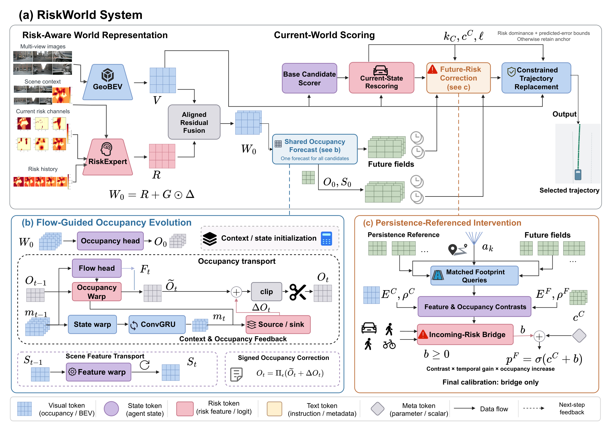
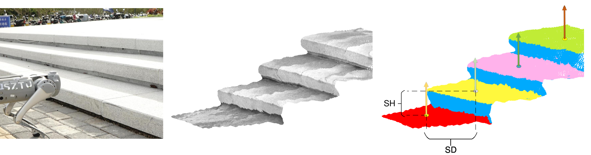

01
Research project
RiskWorld
World modeling for risk-aware motion planning in automated driving.
ISAC, RWTH Aachen · Aachen, Germany

ROBOT LEARNING · WORLD MODELS · SPATIAL INTELLIGENCE
I am Rongxiang Zeng, a master’s student in Robotic Systems Engineering at RWTH Aachen University. I work as a research assistant at the Institute of Highway Engineering (ISAC), advised by Dr. Yongqi Dong.
My research interests lie in robot learning, world models, and spatial intelligence.
I am also an intern at HHS Robotics (Haohai Xingkong) in Shanghai, conducting research in robot learning.
Seeking PhD opportunities · Fall 2028
My research interests are robot learning, world models, and spatial intelligence.
Started a new world-model research project at ISAC.
Joined HHS Robotics in Shanghai as a research intern.
Our latent-centric perspective on world models appeared at CVPR Workshops 2026.
Started my master’s studies and research at RWTH Aachen University.
Selected projects in robot learning, world models, and spatial intelligence.
World modeling for risk-aware motion planning in automated driving.
ISAC, RWTH Aachen · Aachen, Germany

Language-guided robot navigation and inspection.
Shenzhen Technology University · Shenzhen, China
Staircase perception and geometric modeling for legged robots.
Shenzhen Technology University · Shenzhen, China

Surveying world models for automated driving: representations, evaluation, and open challenges.
ISAC, RWTH Aachen · Aachen, Germany
HHS Robotics · Shanghai, China
ISAC, RWTH Aachen · Aachen, Germany
ISAC, RWTH Aachen · Aachen, Germany
Showing 7 projects
Conference and workshop papers, alongside preprints and manuscripts under review.
CVPR Workshops, 2026, pp. 4510–4519.
IEEE/RSJ IROS, 2025.
IEEE ICRA, 2024.
arXiv:2609.18442, 2026. Under review at IEEE T-ITS.
arXiv:2603.09086, 2026. Under review at ICRA 2027.
Showing 5 publications
Master’s student, Robotic Systems Engineering
Aachen, Germany
Bachelor’s degree, Automation
Shenzhen, China
Intern · Humanoid foundation models
Shanghai, China
Research Assistant · World models
Aachen, Germany
Research Assistant · Sino-German College of Intelligent Manufacturing
Shenzhen, China
Intern · Vehicle planning and control
Shenzhen, China
Intern · Robot trajectory planning
Shenzhen, China
NEXT STAR Global Challenge
Third Prize, Germany Special Competition
National University Student Smart Car Competition
National Second Prize, Outdoor Autonomous Driving Challenge
Point-cloud-based staircase modeling · CN117788693B (2024)
Air–ground multimodal quadruped robot and control · CN116374041B (2023)
GET IN TOUCH
I am seeking Fall 2028 PhD opportunities in robot learning, world models, and spatial intelligence. Please get in touch for research discussions and opportunities.
rongxiang.zeng@rwth-aachen.de